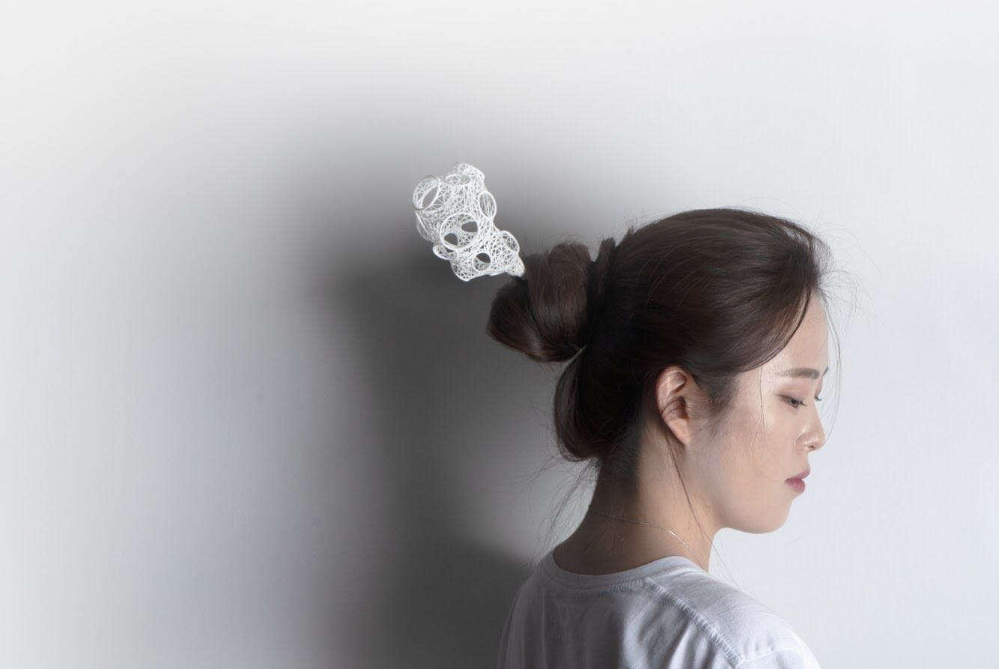
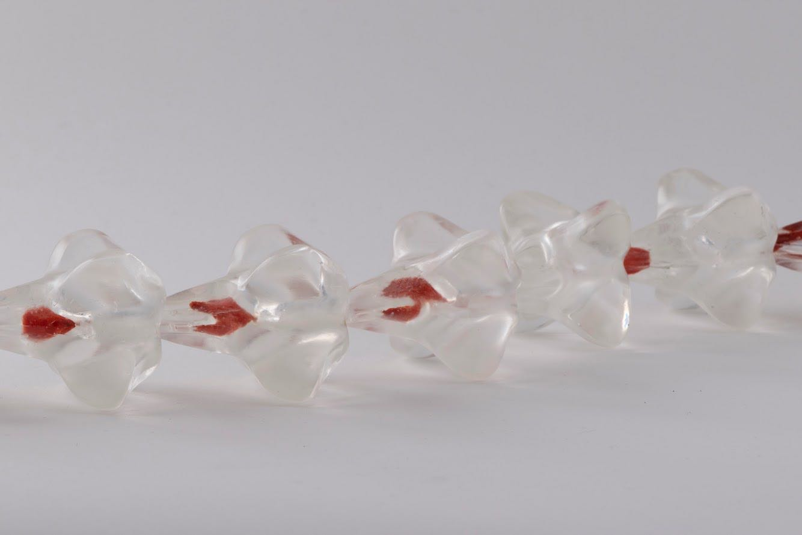

人是万物的量尺-当代首饰 | 章雨叶 「艺术访谈」
欢迎来到木牙Make Unique Young Arts，让我们来探索人体美学和当代首饰～
现在的社会不断的形成和推进，以人为本作为科学发展观的核心思想已经深入人心，在这样的社会生活的我们自然而然成为了万物的量尺。
With the continuous formation and advancement of the current society, the people-oriented concept of scientific development has deep root in people's hearts. In such a company, we naturally become a measure of all things.
首饰作为长期被身体佩戴的器皿，离开了身体本身是否就失去了它们原本的意义？伴随着这样的疑问，我们将接触到一个新而小众的专业--当代首饰。当代首饰保留着首饰本身是身体的一部分的核心思想的同时开始向外扩散和发展。于此同时就不同的手工人本身自我的思想开始分散出不同程度上的理解。
The body has worn jewelry for a long time. Without the body itself, does it lose its original meaning? With such questions in mind, we will expose to a new and niche specialty -- contemporary jewelry. Contemporary jewelry retains the core idea that jewelry itself is a part of the body and, at the same time, begins to spread and develop outwards. Simultaneously, the thoughts of the hand workers themselves started to disperse to different degrees of understanding.
而今天我们有幸邀请 章雨叶（Yuye Zhang）还在Temple就读研究生的她来到木牙MUYA和我们聊聊是什么是她的灵感来源以及她本身对于当代首饰这一专业的理解和未来展望。
We have the honor to invite Yuye Zhang, a graduate student at Temple, to MUYA to talk with us about her inspiration, her understanding of contemporary jewelry, and her future outlook.

章雨叶（Yuye Zhang）是来自中国苏州的国际学生。她目前在 Temple 大学，Tyler 艺术与建筑学院攻读金属/珠宝/ CAD-CAM的第二年制MFA课程。她的当代珠宝作品经常使用3D建模和3D打印技术。她的灵感来自于她自己的生活。她目前的工作探索了不同的物质和元素，也揭示了身体与精神世界之间的关系。
Yuye Zhang is an international student from Suzhou, China. She is now in the 2nd year MFA program of Metal/ Jewelry/CAD-CAM at Temple University Tyler School of Art & Architecture. Her contemporary jewelry work is frequently using 3D modeling and 3D printing technique. Her inspiration always come from her own life. Her current work explores different materials and elements and uncovers he relationships between body and spiritual world.


进入研究生阶段， 我一直在探索新的我从未尝试过的领域以探索现代首饰艺术的边界。我的灵感大多来自自己的生活体验。我最近的作品在试图探索身体与意识， 人体与首饰，个人与世界之间的交流。随着年龄的增长我开始意识到一些自己以及周围人身体上的问题比如 一些伤痛，疾病和残疾。一些对我们的生活构成了一定的不良影响， 而另一些却可能给我们带来一些新的体验。我开始思考究竟我们所赖以生存的身体与自己是什么关系。是我们思想的完美的执行者还是我们行动的枷锁。
My works are exploring the interactions between our bodies and the spiritual awareness. It is not normally aware by us what is controlling, limiting, and assisting us to complete tasks as humans, but these relationships are do affecting our daily life. Injury, diseases, and birth defects might limit our senses to the world, but they may also bring the unique experience and advantage that “normal” people don’t have. Is our “normal” body a perfect executor or it is a limitation to our mind? Would the injury or disability break the limitation? However, I’m not seeking a certain answer, the blurry boundary between our spiritual world and the physical body is the beauty that worth showing.
于是我将身体内部不可见的结构像是细胞， 骨骼，神经系统之类做成了首饰，使其与模特的身体产生互动以展示我找到的平衡和冲突。我在寻找这些微妙的关系时，我发现发展至今的医疗成为了我们人类意识与身体博弈的场所。所以我会运用一些医疗物品作为作品的一部分。对我来说，首饰是一种可以连接自我和其余世界的媒介。它可以是个性、 身份地位和财富的象征，也可以是身体的衍生。我们身上所带即是我们的名片。
Therefore, my work is presenting the collision by visualizing the body nature structures that are not visible normally such as bones, cells, nerve systems, etc. Traditional and modern medical materials are utilized in my pieces because the development of a medical treatment is a game between the body and the intelligence of mankind. To me, jewelry is a medium that could connect our personal world to the rest of the physical world. It could be a symbol of the identity and personality; a representation of wealth and taste; even an extension of our body. What we wear on the body became the silence media that communicating each other.


➤ 木牙MUYA: 作为已经生活在信息新媒体时代的你，为什么会选择当代首饰作为自己的专业呢？如果选择这个专业需要面对和接受什么？
As you have been living in the age of new media, why did you choose contemporary jewelry as your major? What did you face and accept for choosing this major?
章雨叶（Yuye Zhang）: 最初我和很多女孩子一样是喜欢首饰闪闪发光的美，所以我从小就很向往首饰设计师这个职业。选择专业的时候我觉得做个设计师其实很有意义，因为设计师不光创造的是美物，还可以创造美好的回忆和纪念。我们关于一个人一件事以及一个时代的回忆都可以通过首饰保存和流传到下一代，下下代甚至几百几千年以后。进入专业以后才算是真正接触到当代首饰并且打开了新世界的大门。我喜欢这种不管是材料还是想法上无限的可能性，它突破了首饰单纯作为装饰品的意义而更像是一个沟通媒介。
At the very beginning, I like beautiful jewelry like every other girl, so I wanted to become a designer to create beauties. I also think a designer is a meaningful job because it not only generates vision but also creates beautiful souvenirs and memories. Our memories of a person, an incidence, or an era could be passed to the next generation even hundreds of years later through jewelry. I just started learning contemporary jewelry art when I got into college, and it opened a new world for me. I like contemporary jewelry because it has unlimited possibilities for ideas and materials. It brakes the boundary of decoration but more like a media of communication.
➤ 木牙MUYA: 在你的创作过程中，你是如何理解“珠宝是身体的一部分”这句话的呢？
How do you think about the statement that jewelry is a part of human body?
章雨叶（Yuye Zhang）: 一方面珠宝代表了佩戴者或者创造者的审美情趣和个性。珠宝在佩戴的时候往往成为人身上最夺目的部分，所以我们选择首饰并佩戴它的时候是在向外界传达我们自己的信息。另一方面来讲珠宝是一种很特别的艺术形式，它的可佩戴性使它独立于其他艺术形式， 佩戴的过程中和我们的身体有直接的互动和联系， 所以我一直是以人体作为基底来创作的，我希望人体可以是我作品的一部分。
On the one hand, jewelry represents the personality of creators and owners. While we were wearing jewelry, they usually become the most eye-catching thing on our bodies, so they transmit our information to the rest of the world. On the other hand, jewelry is a unique art form that was directly interacting with our bodies. Therefore, my work is usually using the body as a base. I think it is necessary, including the body, in my jewelry work.
➤ 木牙MUYA: 首饰设计中材料的选择和应用都是需要经过很多的研究和实践的，请问你是如何筛选材料进行创作的呢？
The selection and application of materials in jewelry design need to go through a lot of research and practice. How did you select materials for your works?
章雨叶（Yuye Zhang）: 我对材料没有限制， 因为每样材料都有自己的特性， 操作起来不一样，出来的效果也不一样。我在初稿设计的时候会对一件作品有个最初的设想，以这种最初的感觉来选择材料开始测试。另外一些材质是根据实操难度来选择的，像3D打印的精度，戴在身上的舒适度，部件与部件之间的结合都在考虑的范围内。
I didn’t set any limitation of the materials I use, because each material has its features, different working flow, and effects. I usually would have an initial expectation of how my work looks like for each piece. Depending on the initial thoughts, I would choose the materials that match my thoughts first to make test pieces. Besides, some material I use in my work is depended on the technical difficulties such as the tolerance of the 3D printing, the wearability, and the mechanism between different parts.

➤ 木牙MUYA: 当代首饰专业如今在国内还不是一个常见的专业，但在国外却有着属于自己的小天地。作为这个专业的学生，你对于未来工作的计划和安排是什么样的呢？又是如何面对这样的情况的？
Contemporary jewelry is not a common major in China, but it has its own niche in foreign countries. As a student of this major, what are your plans for your future work? And how will you face such this situation?
章雨叶（Yuye Zhang）: 现在这个专业在国内确实还没有完全发展起来， 但是其实在各个地方都有自己的萌芽吧。我自己在地域上没有给自己设定什么门槛，毕竟不论是艺术首饰还是商业珠宝都没有国界的限制。我觉得做一个独立艺术家或者一个商业设计师都是非常快乐的事情。独立艺术家的话，创作没有什么限制，交流和分享的过程也能不断见到最新鲜的事物。自己能有加入一个有活力的公司当设计师，或者自己建立一个品牌，看到自己的作品真实的戴在顾客的身上成为她们故事的一部分也是一件非常有意义的事情。
Even though this major hasn’t fully developed in China, there are some new artists and brands contributing to this field. I don’t have a specific place that I would like to stay forever in the future. I would like to either be an independent artist or a commercial jewelry designer. Independent artists don’t have too much limitation for works, and sharing work with other people could always bring me the latest ideas and technology. If I can join a company as a designer or establish my own one, I would be happy to see my work be a part of someone’s story.
➤ 木牙MUYA: 有哪些关于当代珠宝的书籍和艺术家你认为是进入这个专业的一定要知道，阅读并了解的？
What are some of the books and artists relate to contemporary jewelry that you think they must know and read?
章雨叶（Yuye Zhang）: 当代珠宝的书籍和艺术家其实有很多值得看的，我个人看的比较杂一些，会看各种其他方面的书吧。基础的形态轮廓我喜欢参考伯里曼的艺用解剖，Ernst Haeckel的Art Forms in Nature。艺术家的话我以前到现在都喜欢的有Neri Oxman，Iris van Herpen，Alexander Mcqueen 还有郭培吧。好多是时装的但是对我突破界限很有帮助。我其实觉得专业里的书很重要但是多看看各个方面的书拓展自己的眼界更加重要， 灵感可以来自各个方面。
There are a lot of great books about contemporary jewelry and artist. I would read various kinds of books, not just for jewelry. For the basic forms and ideas, I like George Bridgman’s art analogy and Ernst Haeckel’s Art Forms in Nature. I’ve always been like Neri Oxman, Iris van Herpen，Alexander Mcqueen and Guo Pei. Some of them are fashion design artists, but they help me jump out of the box. I think it is essential to read books about jewelry, but the other books are more relevant to make my view broader.
➤ 木牙MUYA: 在使用3D打印的技术进行创作时，当进行到复杂的模型建构时，有哪些tip可以私心分享的呢？
When you are working on 3D printing technology and carrying out complex model construction, what tips you can share with us?
章雨叶（Yuye Zhang）: 我自己是用Rhino来画草图的，其实首饰是一个结合了5感的创作过程，所以直接从一个3D的想法建模更直观和快捷，而且电脑上建完模还能渲染不同的材料来选择我要的感觉 然后直接出效果图来征求老师同学的意见也可以避免一些时间和材料上的浪费。我有时候也会手绘然后再建模，这时候就要解析清楚过各个部位结构。其实之前素描训练的基础很重要，然后就是同一个形状可以多试试不同的指令会有不同的效果，我个人认为建模时候的尝试是成本最低的也是最有效的。
I use Rhino to sketch. Making Jewelry is a process including five senses, so it is more efficient to transfer a 3-dimensional idea into a 3-dimensional model. Moreover, I would render different materials and effects and ask around suggestions from teachers and peers so that I would avoid some waste of time and materials. Sometimes I like hand drawing some sketches as well. While transfer drawing to the 3D model, I need to analyze the structures that make the beginning training of drawing important. I would try different commands for the same form so I can choose the best effect. I think the cost of computer modeling is the lowest and most efficient.
➤ 木牙MUYA: 作为首饰设计师，有的是用手工打磨设计而成，有的是用机器加工制作而成，你在手工和机器加工的不同产出中有哪些心得呢？
As a jewelry designer, some works are handmade and some are made by machine. What are your experiences in the different outputs of manual and machine processing?
章雨叶（Yuye Zhang）: 我自己是非常喜欢手工做东西的，在没有熟练建模之前我很喜欢雕蜡，那种精致和灵活是3D打印很难替代的。首饰不光是视觉艺术， 还涉及到质感， 所以我自己觉得用手触摸感受还是挺重要的。但是手工的过程非常漫长，加工过于依赖时间技术和耐心，容错率非常低。我觉得机器加工减少了很多时间精力上的成本，能实现的想法也变得更快更多更精确。还有一点就是机器帮我实现了材料自由和形体自由。一些手工难以加工的材料和形状通过机器可以轻松的实现。
Fashion has always interested me and t-shirts are an accessible entry point into that world. I have always collected t-shirts and books so it was only natural for me to start making my own. Bootleg philosophy, make the things you want, make the things you want to see in the world.
➤ 木牙MUYA: 可以简单描述一下你对于传统珠宝和当代珠宝的理解吗？它们有什么不同和共通的地方？
Can you briefly describe your understanding of traditional jewelry and contemporary jewelry? What do they have in common and different?
章雨叶（Yuye Zhang）: 我觉得共通的地方就是他们都需要精心的设计和打磨，只是注重的点不一样。传统珠宝更注重装饰性和价值， 像是贵金属的运用，宝石的挑选，和衣服的搭配。它更多的功能是人的陪衬或者是身份性格的体现。而当代珠宝更多是交流和传达，它自己本身就是一个信息源，讲着它自己的故事。
I think the same part is they all require time and intelligence while design and make, but they have their own focal point. Traditional jewelry focuses more on decoration and value, such as applying precious metals, picking the gems, and matching with cloths. It has more function in serving the identity and personality of the person who wears it. Contemporary jewelry focuses on communication and conveys as a source of information itself. Every piece is an independent story.

✯ Which inspire Yuye Zhang most ✯
“人是万物的尺度”
"Man Is the Measure of All Things."
木牙微信订阅号